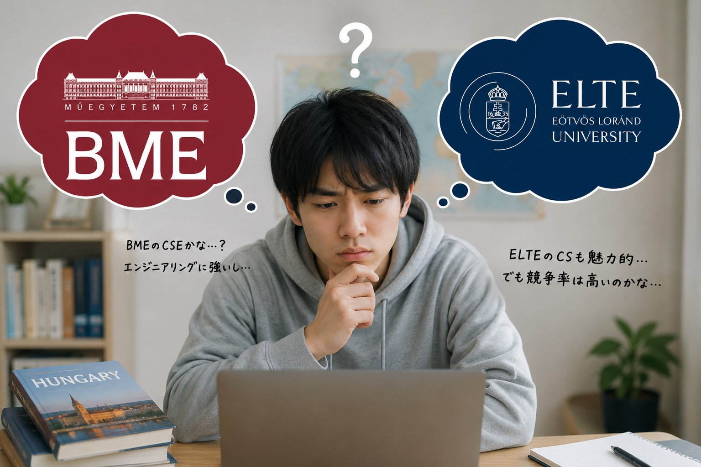
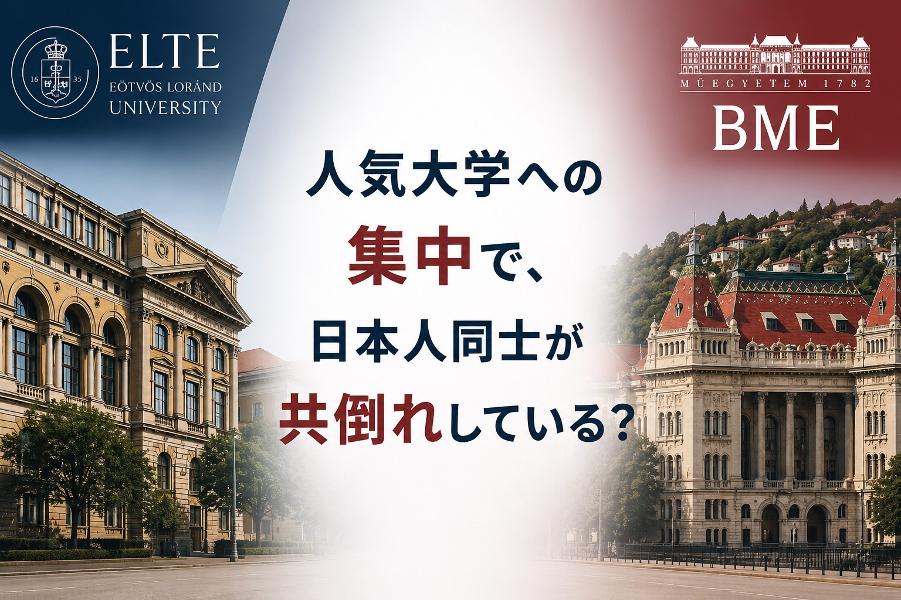

1. ELTE・BMEに応募が集中している
ハンガリー政府奨学金「Stipendium Hungaricum」の相談を受けていると、日本人の応募先にはある程度の偏りがあるように感じます。
特に相談が多いのはELTEとBMEです。
Computer Science分野では、
第一志望：ELTE Computer Science BSc
第二志望：BME Computer Science Engineering（CSE）BSc
という組み合わせを希望する方が少なくありません。
もちろん、どちらもハンガリーを代表する大学であり、人気があるのは自然なことです。
しかし、多くの日本人が同じ大学・同じプログラムへ応募することで、日本人同士の競争が激しくなっている可能性があります。
2. なぜELTE・BMEに応募が集中するのか

理由の一つは、日本語で得られる情報量の違いだと考えています。
ELTEやBMEはYouTubeやSNSで紹介される機会が多く、日本語の記事も比較的見つけやすい大学です。
一方で、ハンガリーには多くの大学がありますが、日本語で情報を探せる大学は限られています。
海外大学の公式サイトは英語で書かれており、授業内容や入学条件、卒業後の進路まで比較するには時間がかかります。
そのため、
- ランキングが高い
- 日本人が多い
- 情報が豊富
- 有名だから安心
という理由で応募先を決める人が多くなるのは自然な流れでしょう。
3. SHでは応募できる大学は2つまで

Stipendium Hungaricumでは、応募できる大学・プログラムは原則2つまでです。
もし多くの日本人が、
- ELTE
- BME
という同じ組み合わせで応募すれば、日本人同士で限られた受入枠を争うことになります。
応募先を5校、10校と選べる制度であれば人気校に挑戦しやすいですが、2校しか選べない制度では、両方とも人気校にすることはリスクになる可能性があります。
4. 大学は国籍の多様性を重視している可能性もある
まず一つ考えられるのが、大学の国際化戦略です。
世界大学ランキングでは、国際性も評価項目の一つとなっています。
そのため、多くの大学は様々な国から学生を受け入れたいと考えている可能性があります。
例えば20人の留学生を受け入れるプログラムに、日本から15人応募した場合と、5か国から4人ずつ応募した場合では、後者の方が国際色豊かな学習環境になります。
もちろん、大学が実際に国籍バランスをどこまで考慮しているかは公表されていません。
しかし、国際化を重視しているのであれば、特定の国の応募が一部の大学に集中することは不利に働く可能性もあります。
5. 大学・プログラムごとに受入人数が決まっている
Stipendium Hungaricumは国ごとの採用人数だけで決まる制度ではありません。
プログラムごとにも受入人数があります。
例えばComputer Scienceプログラムに受け入れられる奨学生の人数には限りがあります。
そこへ多くの日本人が集中すれば、日本人同士で競争が起こることになります。
つまり、
「日本人が同じ大学 かつ 同じプログラムへ集中して応募しているため競争が激しくなっている」
という可能性が考えられます。
6. 「共倒れ」が起きている可能性

ここでいう「共倒れ」とは、日本人同士で一人だけが合格するという意味ではありません。
人気大学・学部への応募が集中した結果、本来であれば別の大学では合格できた可能性のある人まで、まとめて不合格になっている可能性があるという意味です。
もちろん、ELTEやBMEを志望すること自体は悪いことではありません。
その大学で学びたい理由があるのであれば、積極的に挑戦すべきです。
しかし、
- ランキングが高いから
- 有名だから
- 日本語情報が多いから
という理由だけで応募先を決めることが、本当に最適な戦略なのかは一度考えてみる価値があります。
7. 大学選びで重要なのは情報量ではなく相性
大学選びでは、ランキングだけでは分からないことが多くあります。
例えば、
- 授業の雰囲気
- 課題量
- 留学生サポート
- 英語のレベル
- 卒業後の進路
などは、実際に在学している学生だからこそ分かる情報です。
日本語の情報が少ない大学でも、自分に合った環境であれば十分に魅力的な選択肢になる可能性があります。
そのため、有名だから選ぶのではなく、自分に合った大学を比較することが重要です。
ハンガリー留学ラボでは、ハンガリーの大学に在籍する日本人現役留学生へ、LINEやZoomで直接相談できます。
志望校やプログラム選びで迷っている方は、実際の授業や学生生活について現役生に聞いてみてはいかがでしょうか。
まとめ
ELTEやBMEへ日本人の応募が集中している背景には、大学の知名度だけでなく、日本語で得られる情報量の差もあると考えられます。
一方で、Stipendium Hungaricumでは応募できる大学が2校までであり、大学・プログラムごとの受入人数にも限りがあります。
そのため、多くの日本人が同じ大学・同じプログラムへ応募することで、日本人同士の競争が激しくなり、本来なら別の大学で合格できた可能性のある人まで不合格になっている可能性も考えられます。
もちろん、これは大学が国籍バランスを考慮していることを示すものではなく、あくまで制度や大学の国際化方針を踏まえた考察です。
応募先を決める際は、ランキングや知名度だけでなく、自分が本当に学びたい内容や大学との相性も含めて比較・検討することが大切です。